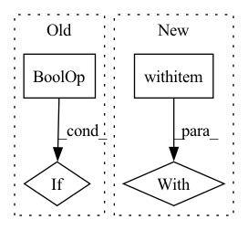

Pattern ID :36850
Before Change
anchor_embedding = run_inference(anchor, encoder)
pos_embedding = run_inference(pos, encoder)
neg_embedding = run_inference(neg, encoder)
if ((anchor_embedding is None) or
(pos_embedding is None) or
(neg_embedding is None)) :
// Some utterances might be smaller than a single sliding window.
continue
labels.append(1)After Change
scores = []
spk_to_utts = feature_extraction.get_spk_to_utts(myconfig.TEST_DATA_DIR)
fetcher = TripletScoreFetcher(spk_to_utts, encoder, num_eval_triplets)
with multiprocessing.Pool(myconfig.NUM_PROCESSES) as pool:
while num_eval_triplets > len(labels) // 2:
label_score_pairs = pool.map(fetcher, range(
num_eval_triplets - len(labels) // 2))
for triplet_labels, triplet_scores in label_score_pairs:In pattern: SUPERPATTERN
Frequency: 3
Non-data size: 4
Instances Fragment ID: 104993170
Project Name: wq2012/speakerrecognitionfromscratch
Commit Name: a93d8ddbd387c75b3eb58399b724b95f61e51a24
Time: 2022-05-10
Author: quanw@google.com
File Name: evaluation.py
M Class Name: AnonimousClass
N Class Name: AnonimousClass
M Method Name: compute_scores(2)
N Method Name: compute_scores(2)
M Parent Class:
N Parent Class:
M File Name: evaluation.py
N File Name: evaluation.py
M Start Line: 38
M End Line: 58
N Start Line: 67
N End Line: 78
Before Change
@cast_torch_tensor
@imagen_sample_in_chunks
def sample(self, *args, **kwargs):
if kwargs.pop("use_non_ema", False) or not self.use_ema :
return self.imagen.sample(*args, **kwargs)
self.reset_ema_unets_all_one_device()After Change
def sample(self, *args, **kwargs):
context = nullcontext if kwargs.pop("use_non_ema", False) else self.use_ema_unets
with context():
output = self.imagen.sample(*args, device = self.device, **kwargs)
return output
Fragment ID: 104993168
Project Name: lucidrains/imagen-pytorch
Commit Name: bec6c53b953b9de45b398f421d69e7abe9b7c517
Time: 2022-07-08
Author: lucidrains@gmail.com
File Name: imagen_pytorch/trainer.py
M Class Name: ImagenTrainer
N Class Name: ImagenTrainer
M Method Name: sample(1)
N Method Name: sample(1)
M Parent Class: nn.Module
N Parent Class: nn.Module
M File Name: imagen_pytorch/trainer.py
N File Name: imagen_pytorch/trainer.py
M Start Line: 499
M End Line: 519
N Start Line: 529
N End Line: 534
Before Change
from collections import defaultdict
agg_loss, agg_sample_size, agg_logging_output = 0., 0., defaultdict(float)
for lang_pair in self.model_lang_pairs:
if sample[lang_pair] is None or len(sample[lang_pair]) == 0 :
continue
loss, sample_size, logging_output = criterion(model.models[lang_pair], sample[lang_pair])
if ignore_grad:After Change
return model.no_sync()
else:
return contextlib.ExitStack() // dummy contextmanager
with maybe_no_sync():
loss, sample_size, logging_output = criterion(model.models[lang_pair], sample[lang_pair])
if ignore_grad:
loss *= 0
optimizer.backward(loss) Fragment ID: 104993169
Project Name: kssteven418/i-bert
Commit Name: e187f6e116c3926cfa693ee6440d277843d0972a
Time: 2020-06-22
Author: yihsiu_liao@Yi-Hsius-MacBook-Pro.local
File Name: fairseq/tasks/multilingual_translation.py
M Class Name: MultilingualTranslationTask
N Class Name: MultilingualTranslationTask
M Method Name: train_step(7)
N Method Name: train_step(7)
M Parent Class: FairseqTask
N Parent Class: FairseqTask
M File Name: fairseq/tasks/multilingual_translation.py
N File Name: fairseq/tasks/multilingual_translation.py
M Start Line: 268
M End Line: 274
N Start Line: 269
N End Line: 290